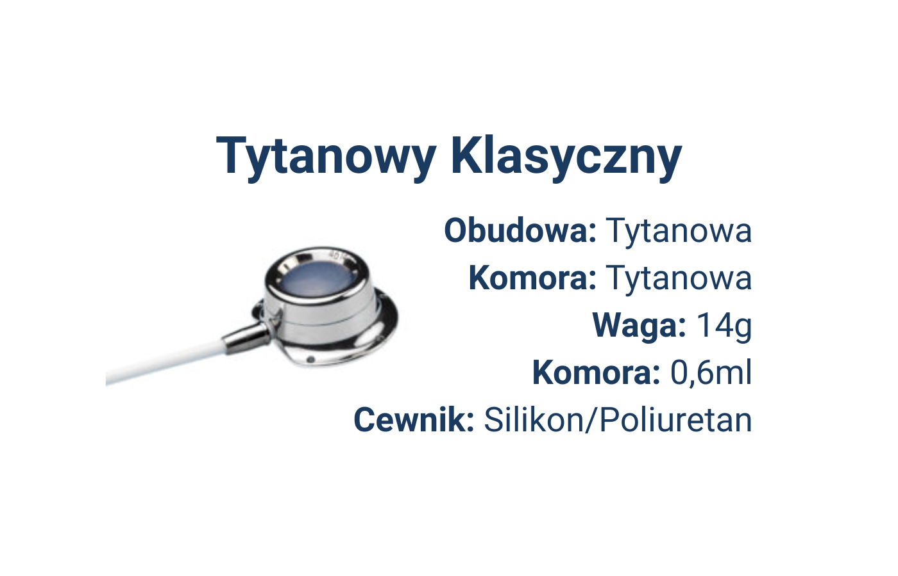
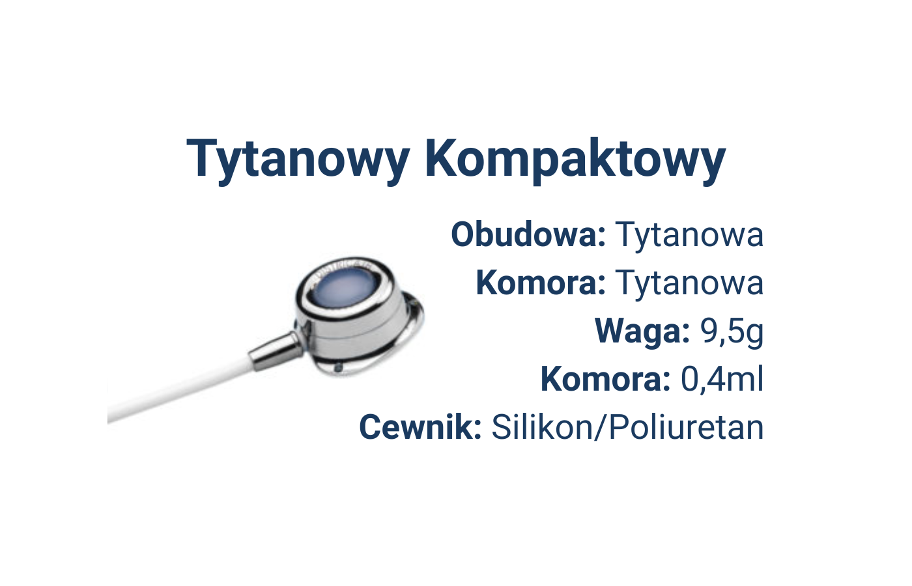
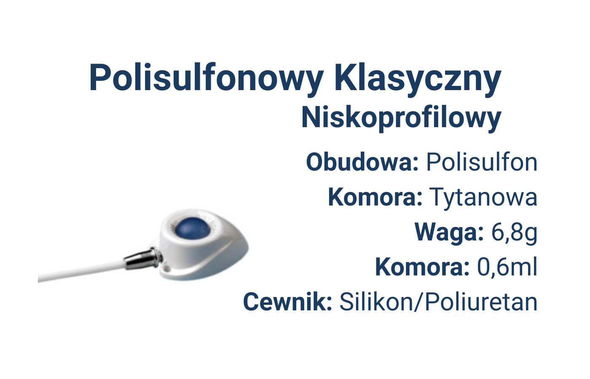
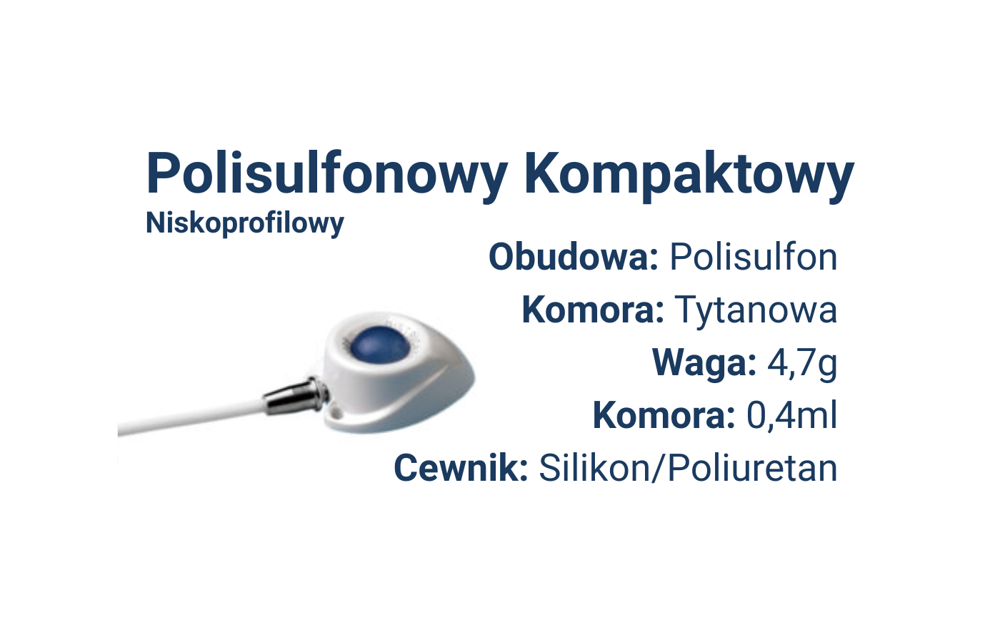
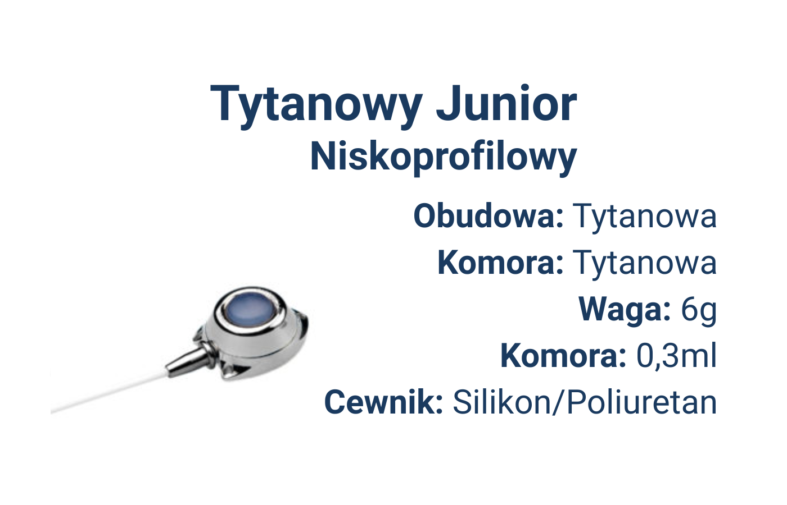

DistricAth® Titanium – Klasyczny
Port w całości wykonany z tytanu. Dostępny z cewnikiem silikonowym lub poliuretanowym.
Zapytaj o produktPorty naczyniowe DistricAth® to rozwiązania przeznaczone dla pacjentów wymagających długoterminowego dostępu naczyniowego.
Oferta obejmuje porty całkowicie tytanowe, porty z obudową z tworzywa i tytanową komorą oraz wersję pediatryczną Junior.

Porty wykonane w całości z tytanu, dostępne w wariantach klasycznym i kompaktowym.

Port w całości wykonany z tytanu. Dostępny z cewnikiem silikonowym lub poliuretanowym.
Zapytaj o produkt
Kompaktowa wersja portu wykonanego w całości z tytanu. Dostępna z cewnikiem silikonowym lub poliuretanowym.
Zapytaj o produktLżejsze rozwiązania z obudową z tworzywa sztucznego oraz tytanową komorą.

Port z obudową z tworzywa sztucznego i tytanową komorą. Dostępny z cewnikiem silikonowym lub poliuretanowym.
Zapytaj o produkt
Kompaktowa wersja portu z obudową z tworzywa sztucznego i tytanową komorą. Dostępna z cewnikiem silikonowym lub poliuretanowym.
Zapytaj o produktRozwiązanie pediatryczne do zastosowań u pacjentów dziecięcych.

Port w całości wykonany z tytanu w wersji dziecięcej. Dostępny z cewnikiem silikonowym lub poliuretanowym.
Zapytaj o produktW przypadku pytań dotyczących wariantu portu, rodzaju cewnika lub doboru rozwiązania do procedury, skontaktuj się z nami — pomożemy dobrać odpowiedni produkt.